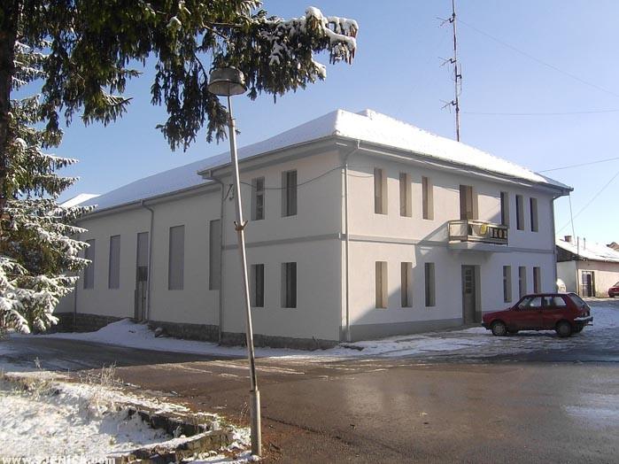

Davne 1928. godine Sjenica je kao mala kasaba bila poznata po ljudima entuzijastima koji su kulturnim aktivnostima stvarali istoriju jednog naroda.
Bogata kulturna ponuda zahtevala je adekvatan prostor. U tu svrhu dobrovoljnim prilozima 1936. godine pristupa se izgradnji Sokolskog doma, koji 1950. godine rekonstruisan postaje Dom kulture Sjenica.
U okviru svoje programske šeme tokom godine, Ustanova kulture je organizator mnogih kulturno-umetničkih manifestacija koje okupe preko 9.000 posetilaca na 60 programa i 1.000 gledalaca filmskih projekcija, uz napomenu da mnogi naši građani i gosti uživaju prisustvujući programima na otvorenom.